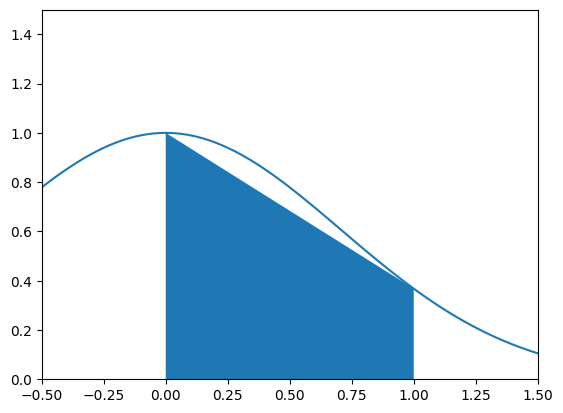
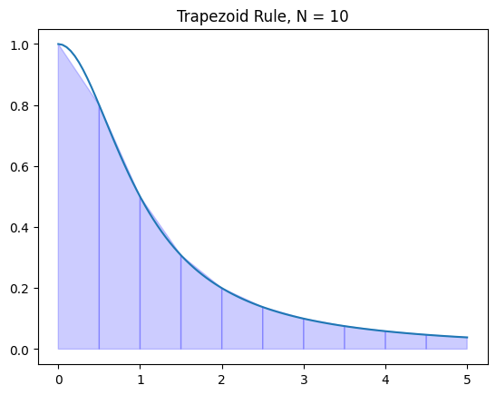
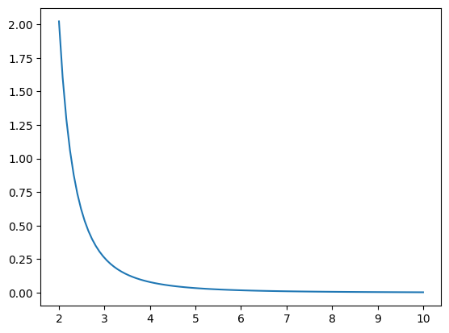

Regra do Trapézio#
import numpy as np
import matplotlib.pyplot as plt
Trapézios#
A integral definida de \(f(x)\) é igual à área (líquida) sob a curva \(y=f(x)\) no intervalo \([a,b]\). As somas de Riemann aproximam as integrais definidas usando somas de retângulos para aproximar a área.
A regra do trapézio fornece uma aproximação melhor de uma integral definida ao somar as áreas dos trapézios que conectam os pontos
para cada subintervalo \([x_{i-1},x_i]\) de uma partição. Note que a área de cada trapézio é a soma de um retângulo e um triângulo
Por exemplo, podemos usar um único trapézio para aproximar:
Primeiro, vamos plotar a curva \(y = e^{-x^2}\) e o trapézio no intervalo \([0,1]\):
x = np.linspace(-0.5,1.5,100)
y = np.exp(-x**2)
plt.plot(x,y)
x0 = 0; x1 = 1;
y0 = np.exp(-x0**2); y1 = np.exp(-x1**2);
plt.fill_between([x0,x1],[y0,y1])
plt.xlim([-0.5,1.5]); plt.ylim([0,1.5]);
plt.show()

Aproxime a integral pela área do trapézio:
A = 0.5*(y1 + y0)*(x1 - x0)
print("Trapezoid area:", A)
Trapezoid area: 0.6839397205857212
Definição#
A regra do trapézio para \(N\) subintervalos de \([a,b]\) de igual comprimento é
onde \(\Delta x = (b - a)/N\) é o comprimento dos subintervalos e \(x_i = a + i \Delta x\).
Note que a regra do trapézio é a média das somas de Riemann à esquerda e à direita
Fórmula de Erro#
Ao calcular integrais numericamente, é essencial saber quão boas são nossas aproximações. Note no teorema abaixo que a fórmula de erro é inversamente proporcional a \(N^2\). Isso significa que o erro diminui muito mais rápido com um \(N\) maior em comparação com as somas de Riemann.
Teorema. Seja \(T_N(f)\) a regra do trapézio
onde \(\Delta x = (b-a)/N\) e \(x_i = a + i \Delta x\). O limite do erro é
onde \(\left| \ f''(x) \, \right| \leq K_2\) para todo \(x \in [a,b]\).
Implementação#
Vamos escrever uma função chamada trapz que recebe os parâmetros de entrada \(f\), \(a\), \(b\) e \(N\) e retorna a aproximação \(T_N(f)\). Além disso, vamos atribuir o valor padrão \(N=50\).
def trapz(f,a,b,N=50):
'''Approximate the integral of f(x) from a to b by the trapezoid rule.
The trapezoid rule approximates the integral \int_a^b f(x) dx by the sum:
(dx/2) \sum_{k=1}^N (f(x_k) + f(x_{k-1}))
where x_k = a + k*dx and dx = (b - a)/N.
Parameters
----------
f : function
Vectorized function of a single variable
a , b : numbers
Interval of integration [a,b]
N : integer
Number of subintervals of [a,b]
Returns
-------
float
Approximation of the integral of f(x) from a to b using the
trapezoid rule with N subintervals of equal length.
Examples
--------
>>> trapz(np.sin,0,np.pi/2,1000)
0.9999997943832332
'''
x = np.linspace(a,b,N+1) # N+1 points make N subintervals
y = f(x)
y_right = y[1:] # right endpoints
y_left = y[:-1] # left endpoints
dx = (b - a)/N
T = (dx/2) * np.sum(y_right + y_left)
return T
Vamos testar nossa função em uma integral onde conhecemos a resposta
trapz(np.sin,0,np.pi/2,1000)
np.float64(0.9999997943832332)
Vamos testar nossa função novamente:
trapz(lambda x : 3*x**2,0,1,10000)
np.float64(1.0000000050000002)
E mais uma vez:
trapz(lambda x : x,0,1,1)
np.float64(0.5)
Uma outra formulação do método do trapézio é:
def trapz2(f,a,b,N=50):
'''Approximate the integral of f(x) from a to b by the trapezoid rule.
The trapezoid rule approximates the integral \int_a^b f(x) dx by the sum:
(dx/2) \sum_{k=1}^N (f(x_k) + f(x_{k-1}))
where x_k = a + k*dx and dx = (b - a)/N.
Parameters
----------
f : function
Vectorized function of a single variable
a , b : numbers
Interval of integration [a,b]
N : integer
Number of subintervals of [a,b]
Returns
-------
float
Approximation of the integral of f(x) from a to b using the
trapezoid rule with N subintervals of equal length.
Examples
--------
>>> trapz(np.sin,0,np.pi/2,1000)
0.9999997943832332
'''
x = np.linspace(a,b,N+1) # N+1 points make N subintervals
y = f(x)
dx = (b - a)/N
T = (dx) * (np.sum(y)-(y[0]+y[-1])/2)
return T
trapz2(np.sin,0,np.pi/2,1000)
np.float64(0.9999997943832332)
scipy.integrate.trapezoid#
O subpacote do SciPy scipy.integrate contém várias funções para aproximar integrais definidas e resolver numericamente equações diferenciais. Vamos importar o subpacote com o nome spi.
import scipy.integrate as spi
A função scipy.integrate.trapezoid calcula a aproximação de uma integral definida pela regra do trapézio. Consultando a documentação, vemos que tudo o que precisamos fazer é fornecer arrays de valores \(x\) e \(y\) para o integrando e scipy.integrate.trapezoid retorna a aproximação da integral usando a regra do trapézio. O número de pontos que fornecemos a scipy.integrate.trapezoid fica a nosso critério, mas temos que lembrar que mais pontos fornecem uma aproximação melhor, mas levam mais tempo para calcular!
Exemplos#
Arcotangente#
Vamos plotar os trapézios para \(\displaystyle f(x)=\frac{1}{1 + x^2}\) em \([0,5]\) com \(N=10\).
f = lambda x : 1/(1 + x**2)
a = 0; b = 5; N = 10
# x and y values for the trapezoid rule
x = np.linspace(a,b,N+1)
y = f(x)
# X and Y values for plotting y=f(x)
X = np.linspace(a,b,100)
Y = f(X)
plt.plot(X,Y)
for i in range(N):
xs = [x[i],x[i],x[i+1],x[i+1]]
ys = [0,f(x[i]),f(x[i+1]),0]
plt.fill(xs,ys,'b',edgecolor='b',alpha=0.2)
plt.title('Trapezoid Rule, N = {}'.format(N))
plt.show()

Vamos calcular a soma das áreas dos trapézios:
T = spi.trapezoid(y,x)
print(T)
1.3731040812301096
T = spi.trapezoid(Y,X)
print(T)
1.3733976225738
Nós sabemos o valor exato
e podemos comparar a regra do trapézio com o valor
I = np.arctan(5)
print(I)
1.373400766945016
print("Trapezoid Rule Error:",np.abs(I - T))
Trapezoid Rule Error: 3.14437121584632e-06
Aproximar ln(2)#
Encontre um valor \(N\) que garanta que a aproximação pela regra do trapézio \(T_N(f)\) da integral
satisfaça \(E_N^T(f) \leq 10^{-8}\).
Para \(f(x) = \frac{1}{x}\), calculamos \(f''(x) = \frac{2}{x^3} \leq 2\) para todo \(x \in [1,2]\), portanto a fórmula do erro implica
Então, \(E_N^T \leq 10^{-8}\) é garantido se \(\frac{1}{6N^2} \leq 10^{-8}\), o que implica
10**4/np.sqrt(6)
np.float64(4082.4829046386303)
Precisamos de 4083 subintervalos para garantir \(E_N^T(f) \leq 10^{-8}\). Calcule a aproximação usando nossa própria implementação da regra do trapézio:
approximation = trapz(lambda x : 1/x,1,2,4083)
print(approximation)
0.6931471843089954
Poderíamos também usar scipy.integrate.trapz para obter o mesmo resultado exato:
N = 4083
x = np.linspace(1,2,N+1)
y = 1/x
approximation = spi.trapezoid(y,x)
print(approximation)
0.6931471843089955
Vamos verificar se isso está dentro de \(10^{-8}\):
np.abs(approximation - np.log(2)) < 10**(-8)
np.True_
Sucesso! No entanto, uma pergunta natural surge: qual é o menor valor real de \(N\) tal que a regra do trapézio fornece a estimativa de \(\ln (2)\) com uma precisão de \(10^{-8}\)?
for n in range(1,4083):
approx = trapz(lambda x : 1/x,1,2,n)
if np.abs(approx - np.log(2)) < 10e-8:
print("Accuracy achieved at N =",n)
break
Accuracy achieved at N = 791
Integral de Fresnel#
As integrais de Fresnel são exemplos de integrais não elementares: antiderivadas que não podem ser escritas em termos de funções elementares. Existem dois tipos de integrais de Fresnel:
Use a regra do trapézio para aproximar a integral de Fresnel
de modo que o erro seja menor que \(10^{-5}\).
Calcule as derivadas do integrando
Como \(f'''(x) \leq 0\) para \(x \in [0,1]\), vemos que \(f''(x)\) é decrescente em \([0,1]\). Os valores de \(f''(x)\) nas extremidades do intervalo são
x = 0
2*np.cos(x**2) - 4*x**2*np.sin(x**2)
np.float64(2.0)
x = 1
2*np.cos(x**2) - 4*x**2*np.sin(x**2)
np.float64(-2.2852793274953065)
Portanto \(\left| \, f''(x) \, \right| \leq 2.2852793274953065\) para \(x \in [0,1]\). Use a fórmula do limite de erro para encontrar uma boa escolha para \(N\)
np.sqrt(10**5 * 2.2852793274953065 / 12)
np.float64(137.9999796949051)
Vamos calcular a integral usando a regra do trapézio com \(N=138\) subintervalos
x = np.linspace(0,1,139)
y = np.sin(x**2)
I = spi.trapezoid(y,x)
print(I)
0.31027303032220394
Portanto, a integral de Fresnel \(S(1)\) é aproximadamente
com erro menor que \(10^{-5}\).
Integral Logarítmica#
A integral logarítmica Euleriana é outra integral não elementar
Vamos calcular \(Li(10)\) de forma que o erro seja menor que \(10^{-4}\). Calcule as derivadas do integrando
Plote \(f''(x)\) no intervalo \([2,10]\).
a = 2
b = 10
x = np.linspace(a,b,100)
y = (np.log(x) + 2) / (x**2 * np.log(x)**3)
plt.plot(x,y)
plt.show()

Claramente \(f''(x)\) é decrescente em \([2,10]\) (e limitada inferiormente por 0), portanto, o máximo absoluto ocorre na extremidade esquerda:
para \(x \in [2,10]\) e calculamos
K2 = (np.log(2) + 2)/(4*np.log(2)**3)
print(K2)
2.021732598829855
Use a fórmula do erro:
np.sqrt(8**3 * 10**4 * 2.021732598829855 / 12)
np.float64(928.7657986995814)
Calcule a regra do trapézio com \(N=929\)
N = 929
x = np.linspace(a,b,N+1)
y = 1/np.log(x)
I = spi.trapezoid(y,x)
print(I)
5.120442039184057
Portanto, a integral logarítmica Euleriana é
de modo que o erro seja menor que \(10^{-4}\).
Exercícios#
Exercício 1. Seja \(f(x) = x^x\) e note que
Plote a função \(f''(x)\) e use essa informação para calcular \(T_N(f)\) para a integral
tal que \(E_N^T(f) \leq 10^{-3}\).
Exercício 2. Considere a integral
e note que
Sem plotar as funções \(f(x)\), \(f'(x)\), \(f''(x)\) ou \(f'''(x)\), encontre um valor \(N\) tal que \(E_N^T(f) \leq 10^{-6}\).